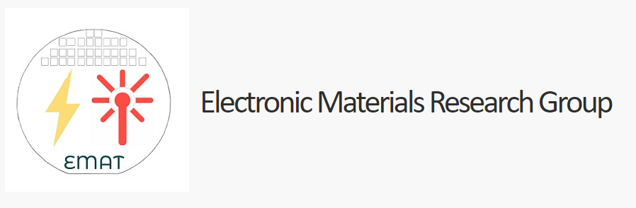
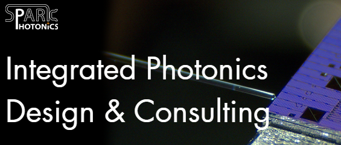
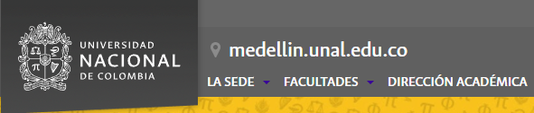

National Science Foundation Convergence Accelerator FUTUR-IC Grant Assistant
I'm currently serving as a Grant Assistant to Dr. Samuel Serna, a co-pi on this grant. I've been participating in our team meetings,
attending NSF meetings for our team, and now am facilitating various research tasks for the other Grant Assistants at BSU for our NSF research.
Bridgewater State University CHIRP nonlinear photonics research group Lab Assistant
As part of Dr. Samuel Serna’s research in the state-of-the-art Photonics & Optical
Engineering laboratory at Bridgewater State University, I have collaborated with MIT’s EMAT
research group, NTT Japan, students from Universidad Nacional de Colombia and researchers from
Institut d'Optique. These collaborations have bolstered my enthusiasm for photonics and its deep
connection to materials science and electrical engineering. Through these collaborations I have
co-authored posters and proceedings for SPIE Optics + Photonics 2022, and SPIE Photonics West 2023.
Working as a lab assistant to Dr. Serna in the CHIRP research group at Bridgewater State University,
I have taken on many different roles and responsibilities in the lab. Experimentally, I have taken
Z-Scan measurements of thin-film wafer nonlinear materials for Supercontinuum Generation on a PIC
with our Menlo Systems class 3R ELMO femtosecond pulsed laser and the ELMA amplifier, designed an
experimental setup for Heterodyne detection, and characterized PICs with our Mapleleaf system for
academic, industry, and research projects. In terms of maintenance and repair of equipment in the
lab, I am liaising with manufacturers to facilitate the repair of our TOPTICA Class 4R OPO Continuous
Laser, one of few in commercial use, with a value of $300,000 USD. As part of the repair process
I am also developing an experimental lab manual for this device, similar to the one that I helped
draft for our Mapleleaf custom PIC characterization station as part of our BSU-MIT joint AIM
Photonics Bootcamp. During the AIM Photonics Bootcamp in 2021 and 2022 and at the ALPHA New
England regular meeting in the summer of 2022 I worked as an instructor for the packaged MZI
experimental setup where we demonstrated the effects of thermal effects imposed on the MZI device.
I also have served as the instructor to new operators of our lab's Mapleleaf PIC characterization
station on multiple occasions, including PhD candidates from MIT. Part of my work has also had
a focus on outreach where I have helped facilitate our yearly public lab nights, and off campus
public outreach events. My experience with outreach has also been enhanced through my experience
as the President and a founding member of BSU’s Optica student chapter from Fall 2021 - Spring
2023. The end of my term as President culminated with the first student organized conference at
BSU, titled Harnessing Light Optics and Photonics where we had speakers from MIT, Optica,
BSU, BU and the Spark Photonics Foundation.
As part of Dr. Samuel Serna’s research in the state-of-the-art Photonics & Optical Engineering laboratory at Bridgewater State University, I have collaborated
with MIT’s EMAT research group, NTT Japan, students from Universidad Nacional de Colombia and researchers from Institut d'Optique. These collaborations have bolstered my
enthusiasm for photonics and its deep connection to materials science and electrical engineering. Through these collaborations I have co-authored posters and proceedings
for SPIE Optics + Photonics 2022, and SPIE Photonics West 2023.

Massachusetts Institute of Technology
I began collaborations with Massachusetts Institute of Technology through the Electronics Materials Group as part of their Integrated
Photonics Bootcamp, coordinated by Dr. Anuradha Agarwal in collaboration with Bridgewater State University through Dr. Samuel Serna-Otalvaro. This Bootcamp partners
with American Institute for Manufacturing Integrated Photonics, AIM Photonics. This bootcamp was my first opportunity to both educate peers, graduate students, and
members of industry on photonics, through the laboratory demonstration of the thermo-optic effect with IPEK's educational packaged Photonic Integrated Circuit implementation of a
Mach-Zhender Interferometer with an electrical DC input in 2022 and 2023. I have also been working on collaborations with Dr. Kazumi Wada, Dr. Agarwal, Dr. Serna, Dr. Worawat Traiwattanapong,
and PhD candidate Katherine Stoll from the Electronics Materials Group at MIT and a team at Nippon Telegram and Telephone in Japan on research involving Supercontinuum Generation on a Photonic
Integrate Circuit. Currently, I am working as an Undergraduate Grant Assistant to Dr. Serna for our collaboration with MIT on the National Science Foundation Convergence Accelerator Grant,
where we alongside the MIT-EMAT team are developing FUTUR-IC, an innitiave that aims to reshape the microelectronics and microphotonics industry into a circular, sustainable industry that
designs products that are intended to be repaired, recycled, and ultimately upgraded rather than thrown into the waste stream.

Spark Photonics
I was hired in June of 2023 as a summer intern, where I worked with our design team on various
projects with Luceda's IPKISS Python Environmen. I continue to work for Spark Photonics as a Technologist
part-time as I carry-on with my undergraduate and, soon enough, graduate education.

Universidad Nacional de Colombia - Sede Medellín
In my first semester at Bridgewater State University in the Fall of 2021 I was awarded an MIT-NASA Research Grant to work on the Z-Scan experimental set-up
currently residing in the state-of-the-art Integrated Photonics lab at BSU. I was able to take measurements that helped in the characterization of a Silicon wafer, which
served as the basis sample for future characterizations of new nonlinear materials. This work lead to a co-authorship on a poster presentation at SPIE: Optics + Photonics
2022 in San Diego, California with Juan Jose Arango Uribe, a graduate of Universidad Nacional de Colombia - Sede Medellín. In the Fall of 2022 BSU was fortunate to host a masters
student from Universidad Nacional de Colombia - Sede Medellín Pablo Bedoya Ríos who was working on his thesis on efficient sources of entangled photonics on a Photonics
Integrated Circuit. I was given the opportunity to collaborate with Pablo for part of his thesis work, where I helped him develop simulations for an nonlinear optical effect
known as Four-Wave Mixing where we simulated the nonlinear Shrödinger equation to model the effects of dispersion on the generation of new frequencies of light. My collaboration
culminated in co-authoring a poster presentation on this research at SPIE Photonics West 2023 in San Francisco, California.
Would you like to learn more about the LEAP funded Photonics and Optical Engineering undergraduate program
or nonlinear optics research at BSU?
Become a part of the first undergraduate engineering program at a Massachusetts state university!